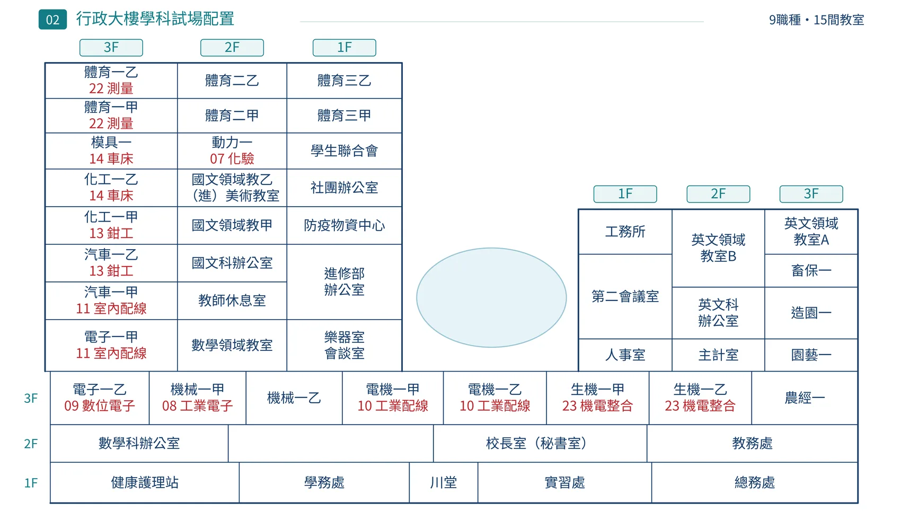

EXPLORE THE VENUES
互動式場域導覽
先選場域，也可以直接選擇 01–29 職種。圖上已標點的職種可點選查看細節；重點圖為視圖裁切，位置不代表實測入口。
資料基準：115/11/12（場地、首日報到）｜競賽日程：本次提供的競賽時間及配分比率表｜試作版・尚待正式核定
圖面職種查詢索引
群組只合併畫面上的點選按鈕，不會改動原始座標或核定狀態。
北科附工 01–28 服務項目
此區為大會服務項目，與 29 個競賽職種分開。點選地圖上的紅色編號或下方服務清單，可查閱位置說明。
服務 18、19、25、26 仍有日期、路線或實際場地尚待公告，已暫停展示來源中的 XX 與候選地點。21 為後門裝卸區域，22 為校門入口，23 的校門指引不代表停車位置。
選擇職種
報到地點
—
學科測驗
—
術科競賽
—
領隊會議／賽後檢討
—
我的競賽三日行程與快速定位
點選後將切換至對應的場域導覽圖；尚未核定的教室及出入口不會自行建立精確座標。
來源：11/12 Excel「報到」與各職種《競賽時間及配分比率表》。僅有時長、沒有開始時間者標示「待公告」，不自行推算；各活動請以大會正式公告為準。
行政大樓互動樓層與教室定位
依 115/11/12 北科附工「學科試場位置暨配置圖」下半部建立點選區。可左右滑動放大閱讀；圖中格位依來源原圖對應，並非實測的門口、行進路線或樓梯入口。

框線代表本樓層可對應的學科教室；實線強調目前選取職種。點選框線可切換對應職種。
圖面框線對應原始樓層配置圖中的教室格位；非現場實測的教室門口或入場動線。請依正式公告及現場指示辨識。
報到與考試前提醒
提醒僅用於行程確認，未列出的證件、器材及進場規定並不代表免帶或可帶，務必以職種正式規定為準。
資料版本、修改紀錄與待核定事項查看更新內容
場地與首日報到：115/11/12 Excel；7 場域及原圖依 11/12 版。
競賽時間：依 17 頁《競賽時間及配分比率表》及同內容的程式重繪日程整理；有些職種時間、適用對象需要最終核對。
第六輪新增：依原始學科配置圖建立行政大樓 15 間教室的圖面點選及樓層高亮；將 4 份歷史職種配置圖列入內部待核對，不直接對外發布。
繼續保留：21–23 車輛動線及停車區、11 處待核對定位、服務18/19/25/26待公告、部分職種名稱與獨立崗位配置圖待核定。
公開注意：此處尚未連線官方公告來源，網站更新需重新部署；請勿僅憑本試作版作為唯一報到依據。
此職種的圖面與分享
依所屬場域圖面標點顯示，尚非入口實測位置。
查看場域原始導覽圖 ↗目前尚未提供此職種已核定的獨立室內崗位圖。
待補上來源圖檔後開放圖面文字補充、動線與建築參考
此區文字依上傳 PNG 圖面的可辨識標示整理；它不會覆蓋 Excel 原欄位。
HOW TO USE
三步驟快速使用
上方切換七個場域，北科附工另有四類地圖；可選重點地圖或完整圖。
可用職種選單、密集定位群組，或報到／學科圖的教室索引找資料。
閱讀報到、學科、術科及會議位置；必要時另開高解析原圖，並可複製職種專屬網址。
SOURCE / 資料來源
資料檢核與發布提醒
本資料更新版使用「01 畫圖用115.11.12.xlsx」的 29 職種與報到資料、「導覽圖115.11.12.rar」中的 10 張原始 PNG 圖，並依北科附工服務圖整理 28 項大會服務對照。當中地圖標點為原圖位置對應，不代表現場經緯度或入口實測位置。
115.11.12 資料更新：07、08、09、10、11、13、14、22、23 等 9 職種的學科位置為「行政大樓」；全 29 職種的 11/24 報到時間已加入；南港高工導覽圖更新為 04-2 版。原有待核對定位與服務待公告狀態仍保留。
尚待確認：第 29 職種依 Excel 顯示為「機器手臂技術」，另可搜尋不同寫法；其他場域 11 處職種定位仍待現場核對；服務 18、19、25、26 待正式公告；獨立崗位配置圖尚未包含在本次來源（可依第四輪匯入工具逐一補上）；公開前請確認個資及發布權限。
115.11.12 第六輪更新：行政大樓教室索引已結合原始學科樓層配置圖建立 15 間可點選教室；試場獨立圖採核定後再公開的流程；職種專屬網址於正式 HTTPS 部署後可供分享。只有時長的活動不會自動假設開始時間。
115.11.13 交通模組更新：交通頁已改為任意兩點動態避樹示意，提供 38 個位置或直接地圖選點、樹木遮罩避讓及加大避讓模式。路網尚未經現場通行、入口及施工管制確認，請勿作為正式指引。